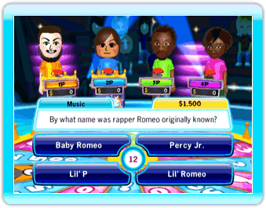
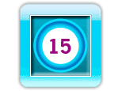
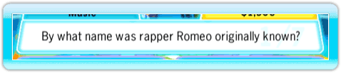
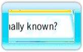
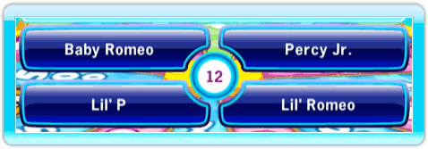
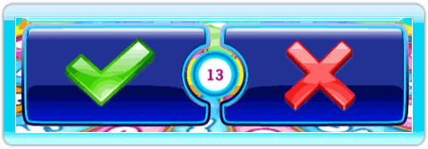

14 |
Game-Interface |
 |

Het handje is je cursor. Het nummer dat getoond wordt in de hand geeft het aantal spelers weer (Speler 1 – Speler 4). De hand geeft de locatie aan waarop de Wii-afstandsbediening is gericht. In de ‘Flashlight’ minigame, fungeert de Wii-afstandsbediening als zaklamp en verandert de cursor in een ring waardoor je op het zwarte scherm kunt kijken. De kleuren van de ringen geven de verschillende spelers weer:
 De timer, in het midden van het antwoordgedeelte, geeft de resterende tijd aan die je hebt om de vraag te beantwoorden.
Linksboven in het vakje met de vraag, staat de categorie weergegeven van de huidige vraag.
Rechtsboven in het vakje met de vraag, staat het bedrag weergegeven dat je wint als jij als eerste de vraag goed beantwoordt.
 In het midden van het vakje wordt de vraag weergegeven.
 De lichtgekleurde nummers geven het aantal beantwoorde vragen weer van de totaal te beantwoorden vragen uit die ronde.
 Bij de meeste vragen kun je kiezen uit 4 antwoorden. Kies het antwoord dat volgens jou juist is.  Bij vragen die je met ‘Goed’ of ‘Fout’ moet beantwoorden, kun je uit 2 antwoorden kiezen (‘Goed’ is een vinkje en ‘Fout’ is een kruisje). Kies ook hier het antwoord dat volgens jou juist is. |

 |
 |
 |